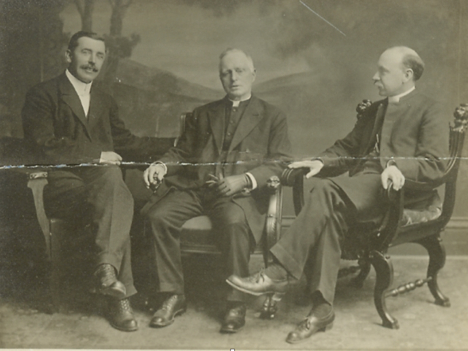

-1-MasterItem.svg)
Stories of Westminster United Church & its People / Page
60
justifies one in inferring that your church here teaches a greater importance of
religious unity
than sectarian difference …” (The Earl’s sense of humour was dry. Very dry.)
His reference was to the fact that the word Presbyterian had been deliberately
left off the stone,
a noticeable straying from the traditional path. David pointed out to the Earl
that the discussions
towards Union had begun and that the congregation. chose to look forward to the
day they would
no longer be Presbyterian.
Spring of 1912: The building was complete. The Sunday School had been meeting in
the back area
since April. The Sunday School at 69 Furby (created at the end of MacKinnon’s ministry) was brought
over to merge with the others. On Sunday June 16 the formal opening of the
building was conducted.
The Sanctuary was flooded with 1300 people. The congregation’s
first three ministers, Christie, Pitblado, and MacKinnon were on
the platform (photo). The choir, led by Mr. M.W. Mayer, processed
in to the strains of Lemaire’s
Romance in D Flat
, played on the
great, new casavant organ by Dr. R.D. Fletcher. Rev Christie
made the announcements. The choir sang
O Clap Your Hands
by Mendelssohn. Rev MacKinnon preached the dedication
sermon. In the evening the service was equally successful
with MacKinnon again preaching a “powerful sermon
addressed principally to the young men.”
At the opening social, two days later chaired by Alderman Crowe (photo) with
solos
by Mrs. Capstick, part songs by the choir and organ solos by both Dr. Fletcher
and Mr.
Mawer. We are told that Rev. Pitblado, Rev. Adams of Young Methodist Church, Rev
Stewart of St. Paul’s Presbyterian Church, Rev. Dr. D.L.Gordon of Central Congregational
Church, and, again Rev. MacKinnon all delivered addresses. The next Sunday Rev.
C.W. Gordon of St. Stephan’s Presbyterian Church conducted the morning service
and Rev. Duval of Knox Church the evening service.
Table
of Contents


Rev. DAvid christie